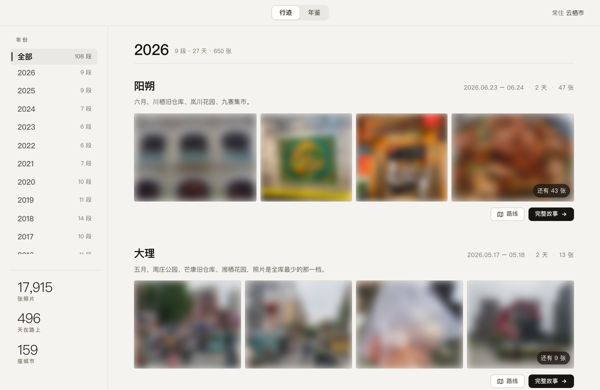
不是搜索工具，是拿来回看的 —— 时间、坐标、地名早就存在照片里，旧游只是把它们排成了这本册子。
这些年的每一段旅行，按年份排开。哪一年跑得最远，哪一年一步没动，一眼看得出来。
点进任意一段：左边是那几天的照片一路往下淌，右边的地图跟着一起滚 —— 照片走到哪儿，地图就跟到哪儿。
去过多少个省，最南最西最远分别到过哪里，这些年的轨迹叠在同一张图上是什么样子。
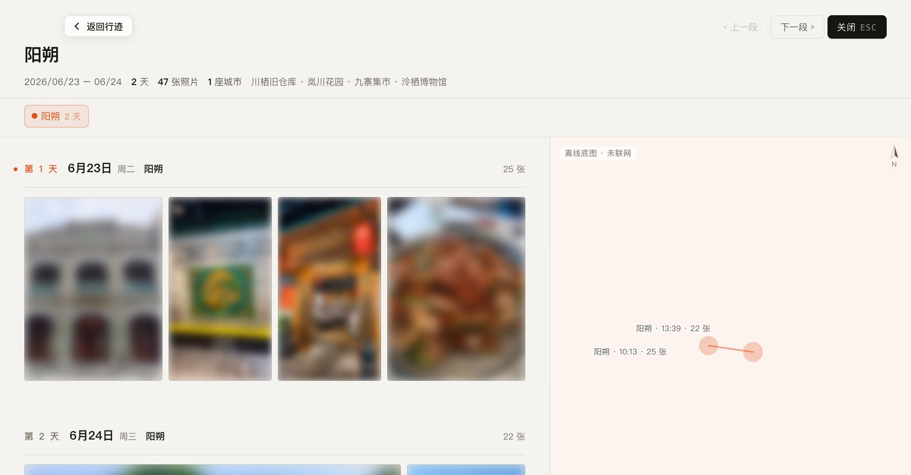
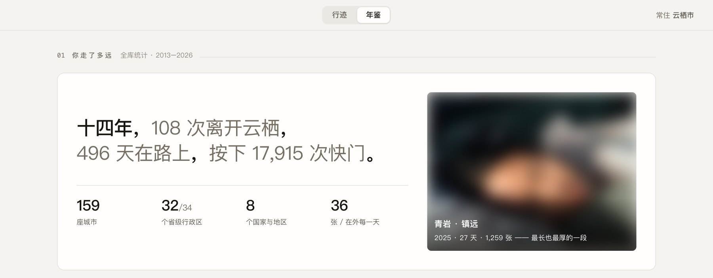
十四个统计，全部由图库自己长出来 —— 下面每一张都是真实界面，地名和照片做过脱敏。
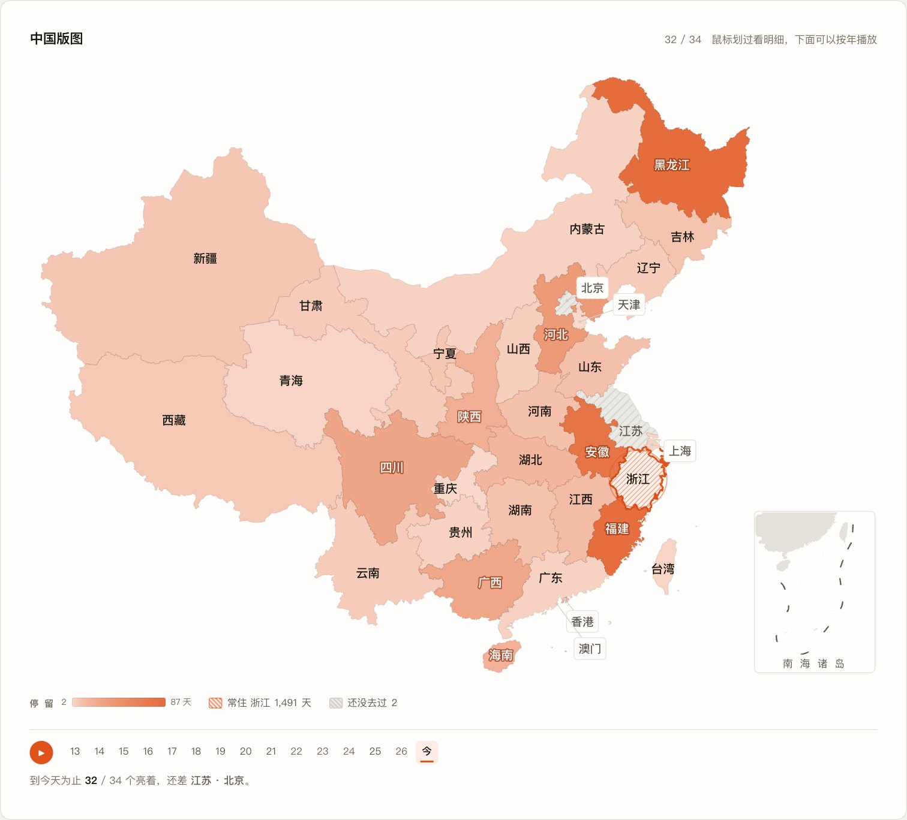
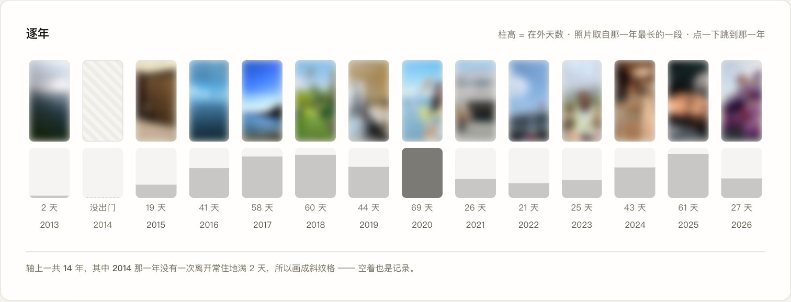
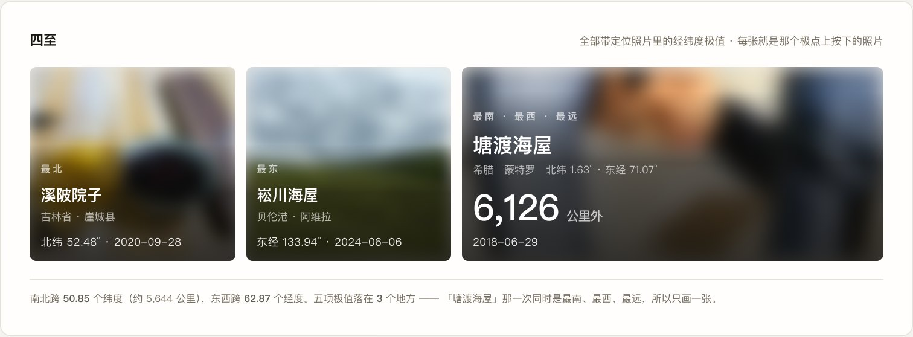
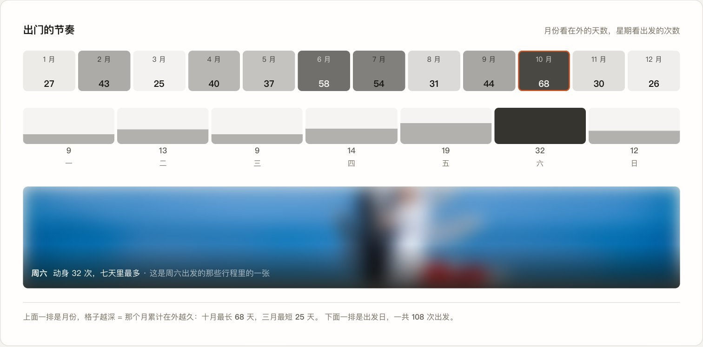
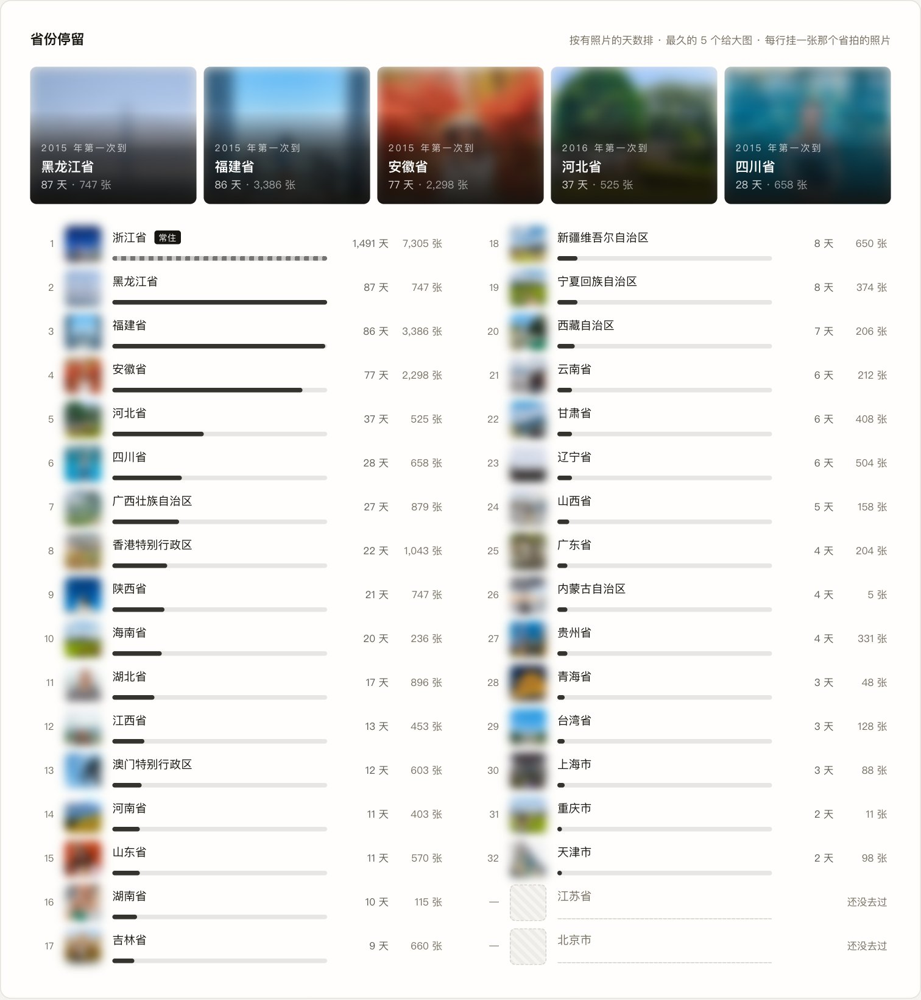
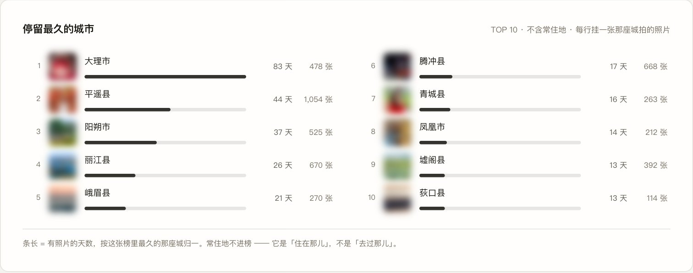
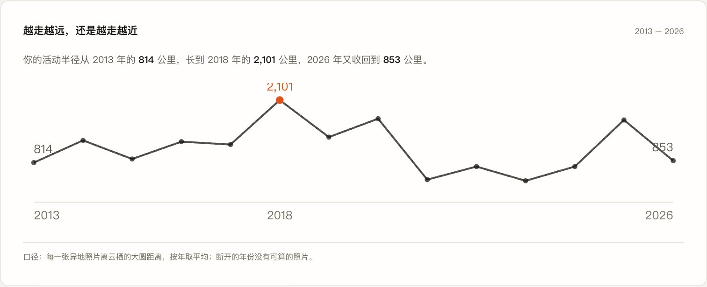
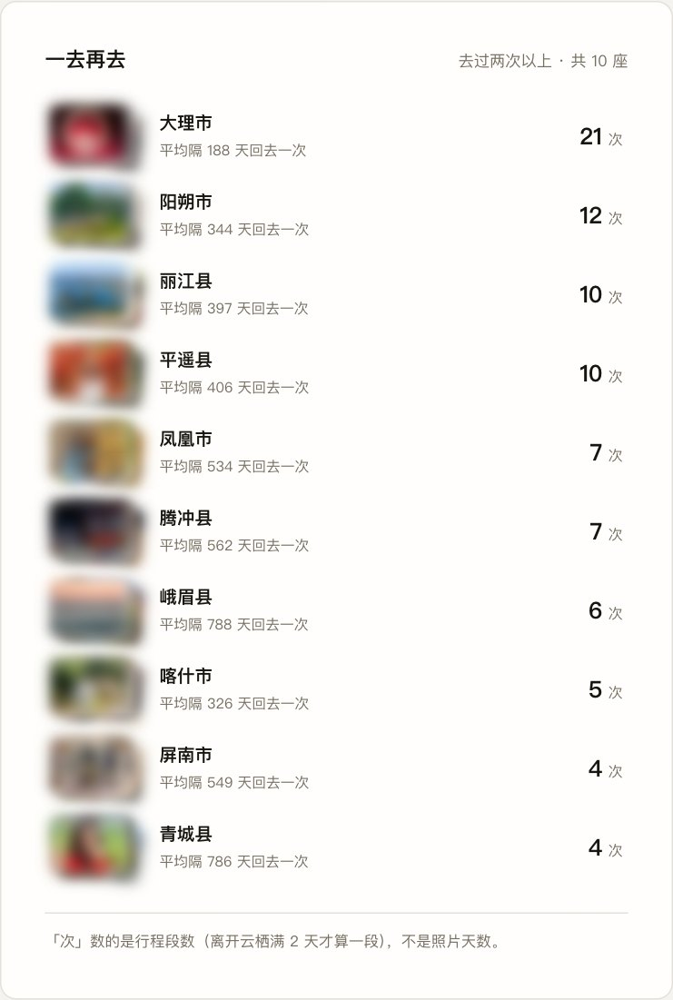
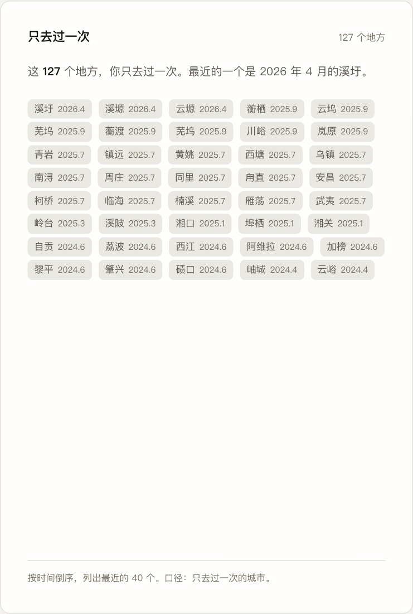
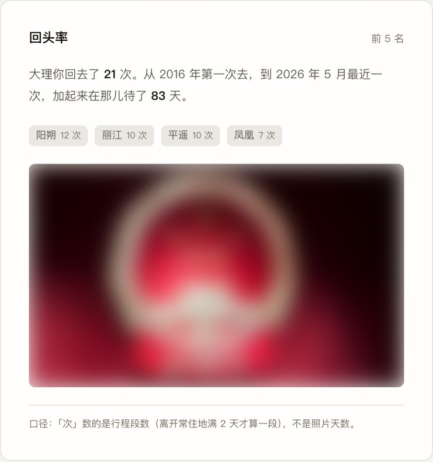
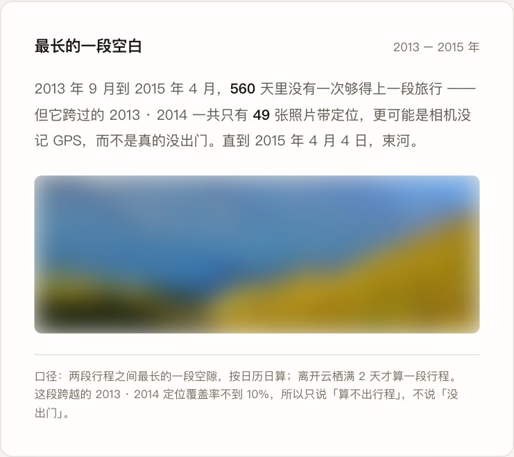
该有的信息，早就写在照片里了。
每张照片都带着拍摄时刻和 GPS 位置。Yore 把这些读出来，顺便拿到「照片」已经存好的地名。
全程只读。原始图库一个字节都不会被改。
离开常住地、连续两天以上，才算一段旅行。常住地由它自己判断，你也可以在设置里改掉。
出差和通勤不会被误算成旅行。
同一天、同一座城市的照片归到一处，再按天串成路线。
不取坐标平均值 —— 坐了一天高铁的话，均值会落在荒野中间。
不用打卡，不用手动建行程。它读一遍「照片」图库，几秒钟就把这些年的旅行分好段。
照片、位置、行程，一个字节都不上传。除了加载地图，不和外界通信。
复制一份数据库快照，只读打开，用完删掉。原始图库全程一个字节都不会被改。
Gatekeeper 会拦一道
xattr -dr com.apple.quarantine /Applications/旧游.app
没有买苹果的开发者证书，所以会被拦。macOS 15 起，老办法「按住 Control 点击 → 打开」已经被苹果取消了，只剩上面这条路。放行一次之后就不再问。